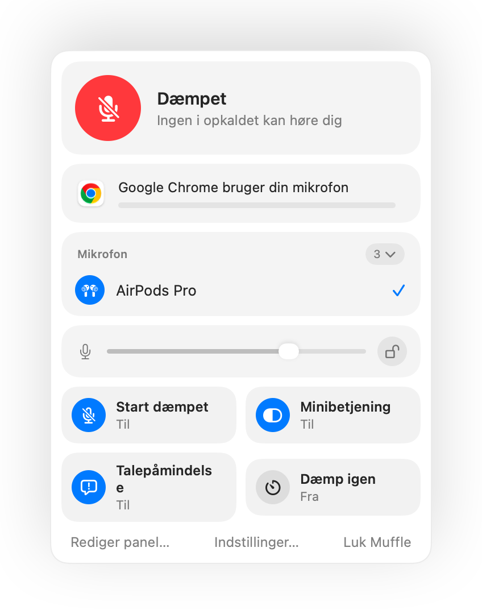

Virker dæmpning med AirPods ikke på din Mac? Her er løsningen
macOS lader dig dæmpe et opkald ved at trykke på stilken på dine AirPods, men kun hvis opkaldsappen understøtter det. Mange gør ikke, herunder Chrome og webopkald i browseren. Du trykker, hører en kort fejllyd, ser beskeden ”Cannot Control Mic”, og de andre i opkaldet kan stadig høre dig.
Muffle tilføjer denne understøttelse til alle apps. Den registrerer trykket, dæmper din Macs mikrofon og afspiller den velkendte dæmpelyd.
Prøv Muffle gratis i 3 dageKommer snart i Mac App Store
Få trykket på dine AirPods til at dæmpe enhver app
- Installer Muffle, og tillad mikrofonadgang. macOS sender kun trykket videre til apps, der må bruge mikrofonen.
- Tjek, at ”Dæmp og slå til med et tryk på dine AirPods” er slået til i Muffle-indstillinger.
- Deltag i et opkald. Trykket dæmper kun, mens en app bruger mikrofonen.
- Tryk én gang på stilken for at dæmpe og igen for at slå til.

- Uden for opkald starter og pauser trykket stadig musik som sædvanligt.
- Hvis dine AirPods bruger et andet tryk til opkaldsstyring, kan du tjekke dine AirPods-indstillinger i Systemindstillinger.
Spørgsmål og svar
Hvorfor afspiller min Mac en fejllyd, når jeg trykker på mine AirPods?
Appen, du ringer fra, understøtter ikke trykket på AirPods til at dæmpe, så macOS afviser det. Når Muffle kører, dæmper trykket din mikrofon i stedet.
Hvilke AirPods understøtter trykket til at dæmpe?
AirPods Pro, AirPods 3 og nyere samt AirPods Max, plus Beats-modeller med opkaldsstyring.